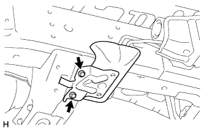
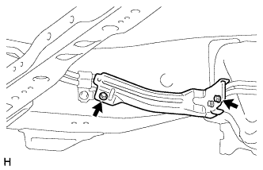
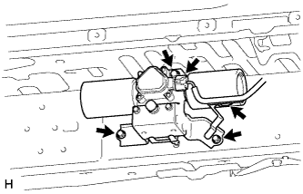

РАСПРЕДЕЛИТЕЛЬ СТАБИЛИЗАТОРА (для моделей с KDSS) > СНЯТИЕ |
| 1. ОТСОЕДИНИТЕ ПРОВОД ОТ ОТРИЦАТЕЛЬНОГО ВЫВОДА АККУМУЛЯТОРНОЙ БАТАРЕИ |
| 2. СНИМИТЕ ПЕРЕДНЕЕ КОЛЕСО |
| 3. СНИМИТЕ ЗАДНЕЕ КОЛЕСО |
| 4. СНИМИТЕ ЛЕВЫЙ ПОРОГ В СБОРЕ |
Для моделей с подсветкой:
Отсоедините 2 разъема.
Выверните 6 болтов и снимите боковой порог.

| 5. СНИМИТЕ ЗАЩИТУ КАРТЕРА ДВИГАТЕЛЯ № 1 В СБОРЕ |
Выверните 4 болта.
 |
Отсоедините защиту картера двигателя от кузова автомобиля, как показано на рисунке.
| 6. СНИМИТЕ ЗАЩИТУ РАСПРЕДЕЛИТЕЛЯ СТАБИЛИЗАТОРА |
 |
Выверните 2 болта и снимите защиту распределителя стабилизатора.
| 7. СЛЕЙТЕ ЖИДКОСТЬ ДЛЯ ТРАНСМИССИИ |
 |
Ослабьте прокачной штуцер на корпусе блока управления стабилизаторами с гидроаккумулятором в сборе и слейте жидкость для подвески.
Затяните прокачной штуцер.
| 8. СНИМИТЕ ЗАЩИТУ ТРУБКИ ПЕРЕДНЕГО СТАБИЛИЗАТОРА |
|  |
Выверните 2 болта и снимите защиту трубки переднего стабилизатора.
| 9. СНИМИТЕ ИЗОЛЯТОР РЕГУЛИРОВОЧНОЙ ТРУБКИ ПЕРЕДНЕГО СТАБИЛИЗАТОРА |
|  |
Выверните 2 болта и снимите изолятор регулировочной трубки переднего стабилизатора.
| 10. СНИМИТЕ РЕГУЛИРОВОЧНУЮ ТРУБКУ ПЕРЕДНЕГО СТАБИЛИЗАТОРА |
С помощью разрезной головки отверните 4 конусных гайки.
Выверните 2 болта и снимите регулировочные трубки переднего стабилизатора.
| 11. СНИМИТЕ РЕГУЛИРОВОЧНУЮ ТРУБКУ ЗАДНЕГО СТАБИЛИЗАТОРА |
С помощью разрезной головки отверните 2 конусных гайки.
Выверните 2 пустотелых соединительных болта-штуцера цилиндра управления заднего стабилизатора и снимите 2 прокладки выпускных отверстий.
Выверните 5 болтов и снимите регулировочные трубки заднего стабилизатора.
| 12. СНИМИТЕ КОРПУС СТАБИЛИЗАТОРА С ГИДРОАККУМУЛЯТОРОМ В СБОРЕ |
|  |
Отсоедините разъем, а затем открепите зажим от кронштейна датчика.
Выверните 3 болта и снимите корпус стабилизатора с гидроаккумулятором.